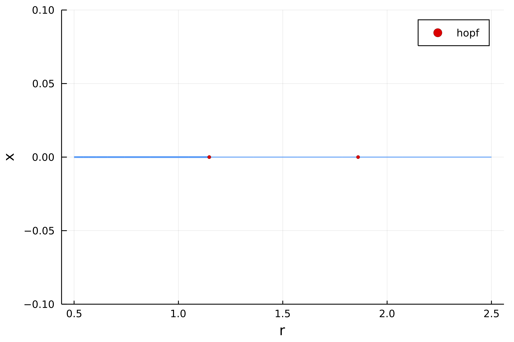

Complex Ginzburg-Landau 2d
This example is also treated in the MATLAB library pde2path.
We look at the Ginzburg-Landau equations in 2d. The code is very similar to the Brusselator example except that some special care has to be taken in order to cope with the "high" dimensionality of the problem.
Note that we try to be pedagogical here. Hence, we may write "bad" code that we improve later. Finally, we could use all sort of tricks to take advantage of the specificity of the problem. Rather, we stay quite close to the example in the MATLAB library pde2path (and discussed in Hopf Bifurcation and Time Periodic Orbits with Pde2path – Algorithms and Applications., Uecker, Hannes, Communications in Computational Physics 25, no. 3 (2019)) for fair comparison.
We do not use automatic branch switching here. The goal is to show our to use the internals of the package to squeeze most of the performances, use tailored options...
The equations are as follows
with Dirichlet boundary conditions. We discretize the square $\Omega = (0,L_x)\times(0,L_y)$ with $2N_xN_y$ points. We start by writing the Laplacian:
using Revise
using DiffEqOperators, ForwardDiff
using BifurcationKit, LinearAlgebra, Plots, SparseArrays, Parameters, Setfield
const BK = BifurcationKit
norminf = x -> norm(x, Inf)
function Laplacian2D(Nx, Ny, lx, ly)
hx = 2lx/Nx; hy = 2ly/Ny
D2x = CenteredDifference(2, 2, hx, Nx)
D2y = CenteredDifference(2, 2, hy, Ny)
Qx = Dirichlet0BC(typeof(hx))
Qy = Dirichlet0BC(typeof(hy))
D2xsp = sparse(D2x * Qx)[1]
D2ysp = sparse(D2y * Qy)[1]
A = kron(sparse(I, Ny, Ny), D2xsp) + kron(D2ysp, sparse(I, Nx, Nx))
return A
endIt is then straightforward to write the vector field
# this encodes the nonlinearity
function NL(u, p)
@unpack r, μ, ν, c3, c5, γ = p
n = div(length(u), 2)
u1 = @view u[1:n]
u2 = @view u[n+1:2n]
ua = u1.^2 .+ u2.^2
f = similar(u)
f1 = @view f[1:n]
f2 = @view f[n+1:2n]
@. f1 .= r * u1 - ν * u2 - ua * (c3 * u1 - μ * u2) - c5 * ua^2 * u1 + γ
@. f2 .= r * u2 + ν * u1 - ua * (c3 * u2 + μ * u1) - c5 * ua^2 * u2
return f
end
function Fcgl(u, p)
f = similar(u)
mul!(f, p.Δ, u)
f .= f .+ NL(u, p)
endand its jacobian:
function Jcgl(u, p)
@unpack r, μ, ν, c3, c5, Δ = p
n = div(length(u), 2)
u1 = @view u[1:n]
u2 = @view u[n+1:2n]
ua = u1.^2 .+ u2.^2
f1u = zero(u1)
f2u = zero(u1)
f1v = zero(u1)
f2v = zero(u1)
@. f1u = r - 2 * u1 * (c3 * u1 - μ * u2) - c3 * ua - 4 * c5 * ua * u1^2 - c5 * ua^2
@. f1v = -ν - 2 * u2 * (c3 * u1 - μ * u2) + μ * ua - 4 * c5 * ua * u1 * u2
@. f2u = ν - 2 * u1 * (c3 * u2 + μ * u1) - μ * ua - 4 * c5 * ua * u1 * u2
@. f2v = r - 2 * u2 * (c3 * u2 + μ * u1) - c3 * ua - 4 * c5 * ua * u2 ^2 - c5 * ua^2
jacdiag = vcat(f1u, f2v)
Δ + spdiagm(0 => jacdiag, n => f1v, -n => f2u)
endWe now define the parameters and the stationary solution:
Nx = 41
Ny = 21
n = Nx * Ny
lx = pi
ly = pi/2
Δ = Laplacian2D(Nx, Ny, lx, ly)
par_cgl = (r = 0.5, μ = 0.1, ν = 1.0, c3 = -1.0, c5 = 1.0, Δ = blockdiag(Δ, Δ), γ = 0.)
sol0 = zeros(2Nx, Ny)and we continue it to find the Hopf bifurcation points. We use a Shift-Invert eigensolver.
# Shift-Invert eigensolver
eigls = EigArpack(1.0, :LM) # shift = 1.0
opt_newton = NewtonPar(tol = 1e-10, verbose = true, eigsolver = eigls)
opts_br = ContinuationPar(dsmin = 0.001, dsmax = 0.005, ds = 0.001, pMax = 2., detectBifurcation = 3, nev = 5, plotEveryStep = 50, newtonOptions = opt_newton, maxSteps = 1060)
br, = continuation(Fcgl, Jcgl, vec(sol0), par_cgl, (@lens _.r), opts_br, verbosity = 0)which gives
Branch number of points: 216
Branch of Equilibrium
Bifurcation points:
(ind_ev = index of the bifurcating eigenvalue e.g. `br.eig[idx].eigenvals[ind_ev]`)
- # 1, hopf at p ≈ +1.14777610 ∈ (+1.14766562, +1.14777610), |δp|=1e-04, [converged], δ = ( 2, 2), step = 94, eigenelements in eig[ 95], ind_ev = 2
- # 2, hopf at p ≈ +1.86107007 ∈ (+1.86018618, +1.86107007), |δp|=9e-04, [converged], δ = ( 2, 2), step = 195, eigenelements in eig[196], ind_ev = 4and (with plot(br, ylims=(-0.1,0.1)))

Normal form computation
We compute the Hopf normal form of the first bifurcation point.
using ForwardDiff
D(f, x, p, dx)= ForwardDiff.derivative(t->f(x .+ t .* dx, p), 0.)
d1Fcgl(x,p,dx) = D(Fcgl, x, p, dx)
d2Fcgl(x,p,dx1,dx2) = D((z, p0) -> d1Fcgl(z, p0, dx1), x, p, dx2)
d3Fcgl(x,p,dx1,dx2,dx3) = D((z, p0) -> d2Fcgl(z, p0, dx1, dx2), x, p, dx3)
jet = (Fcgl, Jcgl, d2Fcgl, d3Fcgl)
hopfpt = computeNormalForm(jet..., br, 1)We can look at the coefficients of the normal form
julia> hopfpt
SubCritical - Hopf bifurcation point at p ≈ 1.1477761028276166.
Period of the periodic orbit ≈ 6.283185307179584.
Normal form: (a = 0.9999993843742166 + 7.024438596095504e-9im, b = 0.004870129870129872 + 0.00048701298701298696im)So the Hopf branch is subcritical.
Codim 2 Hopf continuation
Having detected 2 hopf bifurcation points, we now continue them in the plane $(\gamma, r)$. To speed things up, we need an analytical version of the second derivative.
Before we start the codim 2 continuation, we tell BifurcationKit.jl to use the spectral information startWithEigen = true because the left eigenvector of the Jacobian is simply not the conjugate of the right one.
# we perform Hopf continuation of the first Hopf point in br
ind_hopf = 1
br_hopf, u1_hopf = @time continuation(
Fcgl, Jcgl,
br, ind_hopf, (@lens _.γ),
ContinuationPar(dsmin = 0.001, dsmax = 0.05, ds= -0.01, pMax = 0.6, pMin = -0.6, newtonOptions = opts_br.newtonOptions, plotEveryStep = 5); plot = true,
updateMinAugEveryStep = 1, verbosity = 3, normC = norminf,
startWithEigen = true, bothside = true,
d2F = jet[3],)
plot(br_hopf, title = "Hopf continuation")
Periodic orbits continuation with stability
Having found two Hopf bifurcation points, we aim at computing the periodic orbits branching from them. Like for the Brusselator example, we need to find some educated guess for the periodic orbits in order to have a successful Newton call.
The following code is very close to the one explained in the tutorial Brusselator 1d (advanced user) so we won't give too much details here.
We focus on the first Hopf bifurcation point. Note that, we do not improve the guess for the Hopf bifurcation point, e.g. by calling newtonHopf, as this is not really needed.
# index of the Hopf point we want to branch from
ind_hopf = 1
# number of time slices in the periodic orbit
M = 30
# periodic orbit initial guess from Hopf point
r_hopf, Th, orbitguess2, hopfpt, eigvec = guessFromHopf(br, ind_hopf, opt_newton.eigsolver,
# we pass the number of time slices M, the amplitude 22*sqrt(0.1) and phase
M, 22*sqrt(0.1); phase = 0.25)
# flatten the initial guess
orbitguess_f2 = reduce(hcat, orbitguess2)
orbitguess_f = vcat(vec(orbitguess_f2), Th) |> vecWe create a problem to hold the functional and compute Periodic orbits based on trapezoidal rule
poTrap = PeriodicOrbitTrapProblem(
# vector field and sparse Jacobian
Fcgl, Jcgl,
# parameters for the phase condition
real.(eigvec),
hopfpt.u,
# number of time slices
M,
# space dimension
2n)We can use this (family) problem poTrap with newton on our periodic orbit guess to find a periodic orbit. Hence, one can be tempted to use
It uses too much memory
opts_po_cont = ContinuationPar(dsmin = 0.0001, dsmax = 0.03, ds= 0.001, pMax = 2.5, maxSteps = 250, plotEveryStep = 3, newtonOptions = (@set opt_po.linsolver = DefaultLS()))
br_po, upo, = @time continuation(Fcgl, Jcgl, vec(sol0), par_cgl, (@lens _.r), opts_po_cont)However, the linear system associated to the newton iterations will be solved by forming the sparse jacobian of size $(2N_xN_yM+1)^2$ and the use of \ (based on LU decomposition). It takes way too much time and memory.
Instead, we use a preconditioner. We build the jacobian once, compute its incomplete LU decomposition (ILU) and use it as a preconditioner.
using IncompleteLU
# Sparse matrix representation of the jacobian of the periodic orbit functional
Jpo = poTrap(Val(:JacFullSparse), orbitguess_f, @set par_cgl.r = r_hopf - 0.01)
# incomplete LU factorization with threshold
Precilu = @time ilu(Jpo, τ = 0.005)
# we define the linear solver with left preconditioner Precilu
ls = GMRESIterativeSolvers(verbose = false, reltol = 1e-3, N = size(Jpo,1), restart = 40, maxiter = 50, Pl = Precilu, log=true)
# we try the linear solver
ls(Jpo, rand(ls.N))This converges in 7 iterations whereas, without the preconditioner, it does not converge after 100 iterations.
We set the parameters for the newton solve.
opt_po = @set opt_newton.verbose = true
outpo_f, _, flag = @time newton(poTrap,
orbitguess_f, (@set par_cgl.r = r_hopf - 0.01),
(@set opt_po.linsolver = ls);
linearPO = :FullMatrixFree, normN = norminf)
flag && printstyled(color=:red, "--> T = ", outpo_f[end], ", amplitude = ", BK.getAmplitude(poTrap, outpo_f, par_cgl; ratio = 2),"\n")
BK.plotPeriodicPOTrap(outpo_f, M, Nx, Ny; ratio = 2);which gives
┌────────────────────-────────────────────────────────┐
│ Newton Iterations f(x) Linear Iterations │
├─────────────┐──────────────────────┐────────────────┤
│ 0 │ 6.5432e-03 │ 0 │
│ 1 │ 1.4372e-03 │ 8 │
│ 2 │ 3.6731e-04 │ 8 │
│ 3 │ 6.5658e-05 │ 9 │
│ 4 │ 4.3028e-06 │ 10 │
│ 5 │ 6.4509e-08 │ 11 │
│ 6 │ 2.9713e-10 │ 12 │
│ 7 │ 2.2181e-13 │ 14 │
└─────────────┴──────-───────────────┴────────────────┘
1.780986 seconds (132.31 k allocations: 1.237 GiB, 12.13% gc time)
--> T = 6.532023020978835, amplitude = 0.2684635643839235and

At this point, we are still wasting a lot of resources, because the matrix-free version of the jacobian of the functional uses the jacobian of the vector field x -> Jcgl(x, p). Hence, it builds M sparse matrices for each evaluation!! Let us create a problem which is fully Matrix Free:
# computation of the first derivative using automatic differentiation
d1Fcgl(x, p, dx) = ForwardDiff.derivative(t -> Fcgl(x .+ t .* dx, p), 0.)
# linear solver for solving Jcgl*x = rhs. Needed for Floquet multipliers computation
ls0 = GMRESIterativeSolvers(N = 2Nx*Ny, reltol = 1e-9, Pl = lu(I + par_cgl.Δ))
# matrix-free problem
poTrapMF = PeriodicOrbitTrapProblem(
Fcgl, (x, p) -> (dx -> d1Fcgl(x, p, dx)),
real.(eigvec),
hopfpt.u,
M, 2n, ls0)We can now use newton
outpo_f, _, flag = @time newton(poTrapMF,
orbitguess_f, (@set par_cgl.r = r_hopf - 0.01),
(@set opt_po.linsolver = ls);
linearPO = :FullMatrixFree, normN = norminf)
flag && printstyled(color=:red, "--> T = ", outpo_f[end], ", amplitude = ", BK.getAmplitude(poTrapMF, outpo_f, par_cgl; ratio = 2),"\n")which gives
┌────────────────────-────────────────────────────────┐
│ Newton Iterations f(x) Linear Iterations │
├─────────────┐──────────────────────┐────────────────┤
│ 0 │ 6.5432e-03 │ 0 │
│ 1 │ 1.4372e-03 │ 8 │
│ 2 │ 3.6731e-04 │ 8 │
│ 3 │ 6.5658e-05 │ 9 │
│ 4 │ 4.3028e-06 │ 10 │
│ 5 │ 6.4509e-08 │ 11 │
│ 6 │ 2.9713e-10 │ 12 │
│ 7 │ 2.2188e-13 │ 14 │
└─────────────┴──────-───────────────┴────────────────┘
1.322440 seconds (35.03 k allocations: 459.996 MiB, 7.63% gc time)The speedup will increase a lot for larger $N_x, N_y$. Also, for Floquet multipliers computation, the speedup will be substantial.
Removing most allocations (Advanced and Experimental)
We show here how to remove most allocations and speed up the computations. This is an experimental feature as the Floquet multipliers computation is not yet readily available in this case. To this end, we rewrite the functional using inplace formulation and trying to avoid allocations. This can be done as follows:
# compute just the nonlinearity
function NL!(f, u, p, t = 0.)
@unpack r, μ, ν, c3, c5 = p
n = div(length(u), 2)
u1v = @view u[1:n]
u2v = @view u[n+1:2n]
f1 = @view f[1:n]
f2 = @view f[n+1:2n]
@inbounds for ii = 1:n
u1 = u1v[ii]
u2 = u2v[ii]
ua = u1^2+u2^2
f1[ii] = r * u1 - ν * u2 - ua * (c3 * u1 - μ * u2) - c5 * ua^2 * u1
f2[ii] = r * u2 + ν * u1 - ua * (c3 * u2 + μ * u1) - c5 * ua^2 * u2
end
return f
end
# derivative of the nonlinearity
function dNL!(f, u, p, du)
@unpack r, μ, ν, c3, c5 = p
n = div(length(u), 2)
u1v = @view u[1:n]
u2v = @view u[n+1:2n]
du1v = @view du[1:n]
du2v = @view du[n+1:2n]
f1 = @view f[1:n]
f2 = @view f[n+1:2n]
@inbounds for ii = 1:n
u1 = u1v[ii]
u2 = u2v[ii]
du1 = du1v[ii]
du2 = du2v[ii]
ua = u1^2+u2^2
f1[ii] = (-5*c5*u1^4 + (-6*c5*u2^2 - 3*c3)*u1^2 + 2*μ*u1*u2 - c5*u2^4 - c3*u2^2 + r) * du1 +
(-4*c5*u2*u1^3 + μ*u1^2 + (-4*c5*u2^3 - 2*c3*u2)*u1 + 3*u2^2*μ - ν) * du2
f2[ii] = (-4*c5*u2*u1^3 - 3*μ*u1^2 + (-4*c5*u2^3 - 2*c3*u2)*u1 - u2^2*μ + ν) * du1 + (-c5*u1^4 + (-6*c5*u2^2 - c3)*u1^2 - 2*μ*u1*u2 - 5*c5*u2^4 - 3*c3*u2^2 + r) * du2
end
return f
end
# inplace vector field
function Fcgl!(f, u, p, t = 0.)
NL!(f, u, p)
mul!(f, p.Δ, u, 1., 1.)
end
# inplace derivative of the vector field
function dFcgl!(f, x, p, dx)
dNL!(f, x, p, dx)
mul!(f, p.Δ, dx, 1., 1.)
endWe can now define an inplace functional
ls0 = GMRESIterativeSolvers(N = 2Nx*Ny, reltol = 1e-9)#, Pl = lu(I + par_cgl.Δ))
poTrapMFi = PeriodicOrbitTrapProblem(
Fcgl!, dFcgl!,
real.(eigvec),
hopfpt.u,
M, 2n, ls0; isinplace = true)and run the newton method:
outpo_f, _, flag = @time newton(poTrapMFi,
orbitguess_f, (@set par_cgl.r = r_hopf - 0.01), (@set opt_po.linsolver = ls);
linearPO = :FullMatrixFree, normN = norminf)It gives
┌────────────────────-────────────────────────────────┐
│ Newton Iterations f(x) Linear Iterations │
├─────────────┐──────────────────────┐────────────────┤
│ 0 │ 6.5432e-03 │ 0 │
│ 1 │ 1.4372e-03 │ 8 │
│ 2 │ 3.6731e-04 │ 8 │
│ 3 │ 6.5658e-05 │ 9 │
│ 4 │ 4.3028e-06 │ 10 │
│ 5 │ 6.4509e-08 │ 11 │
│ 6 │ 2.9713e-10 │ 12 │
│ 7 │ 2.2143e-13 │ 14 │
└─────────────┴──────-───────────────┴────────────────┘
1.194715 seconds (952 allocations: 151.503 MiB)Notice the small speed boost but the reduced allocations. At this stage, further improvements could target the use of BlockBandedMatrices.jl for the Laplacian operator, etc.
Other linear formulation
We could use another way to "invert" jacobian of the functional based on bordered technics. We try to use an ILU preconditioner on the cyclic matrix $J_c$ (see Periodic orbits based on trapezoidal rule) which has a smaller memory footprint:
Jpo2 = poTrap(Val(:JacCyclicSparse), orbitguess_f, @set par_cgl.r = r_hopf - 0.1)
Precilu = @time ilu(Jpo2, τ = 0.005)
ls2 = GMRESIterativeSolvers(verbose = false, reltol = 1e-3, N = size(Jpo2,1), restart = 30, maxiter = 50, Pl = Precilu, log=true)
opt_po = @set opt_newton.verbose = true
outpo_f, hist, flag = @time newton(
poTrapMF, orbitguess_f, (@set par_cgl.r = r_hopf - 0.1),
(@set opt_po.linsolver = ls2), linearPO = :BorderedMatrixFree,
normN = norminf)but it gives:
┌────────────────────-────────────────────────────────┐
│ Newton Iterations f(x) Linear Iterations │
├─────────────┐──────────────────────┐────────────────┤
│ 0 │ 3.3298e-03 │ 0 │
│ 1 │ 9.5088e-03 │ 34 │
│ 2 │ 1.2807e-03 │ 26 │
│ 3 │ 7.1393e-05 │ 29 │
│ 4 │ 4.1625e-07 │ 36 │
│ 5 │ 1.7924e-09 │ 44 │
│ 6 │ 6.2725e-13 │ 60 │
└─────────────┴──────-───────────────┴────────────────┘
3.533022 seconds (62.70 k allocations: 1009.781 MiB, 4.85% gc time)Hence, it seems better to use the previous preconditioner.
Continuation of periodic solutions
We can now perform continuation of the newly found periodic orbit and compute the Floquet multipliers using Matrix-Free methods.
# set the eigensolver for the computation of the Floquet multipliers
opt_po = @set opt_po.eigsolver = EigKrylovKit(tol = 1e-3, x₀ = rand(2n), verbose = 2, dim = 25)
# parameters for the continuation
opts_po_cont = ContinuationPar(dsmin = 0.0001, dsmax = 0.02, ds = 0.001, pMax = 2.2, maxSteps = 250, plotEveryStep = 3, newtonOptions = (@set opt_po.linsolver = ls),
nev = 5, precisionStability = 1e-7, detectBifurcation = 0)
br_po, = @time continuation(poTrapMF, outpo_f,
(@set par_cgl.r = r_hopf - 0.01), (@lens _.r), opts_po_cont, linearPO = :FullMatrixFree;
verbosity = 2, plot = true,
plotSolution = (x, p; kwargs...) -> BK.plotPeriodicPOTrap(x, M, Nx, Ny; ratio = 2, kwargs...),
printSolution = (u, p) -> BK.getAmplitude(poTrapMF, u, par_cgl; ratio = 2), normC = norminf)This gives the following bifurcation diagram:

Although it would be "cheating" for fair comparisons with existing packages, there is a trick to compute the bifurcation diagram without using preconditionners. We will not detail it here but it allows to handle the case Nx = 200; Ny = 110; M = 30 and above.
We did not change the preconditioner in the previous example as it does not seem needed. Let us show how to do this nevertheless:
# callback which will be sent to newton.
# `iteration` in the arguments refers to newton iterations
function callbackPO(x, f, J, res, iteration, itlinear, linsolver = ls, prob = poTrap, p = par_cgl; kwargs...)
# we update the preconditioner every 10 continuation steps
if mod(kwargs[:iterationC], 10) == 9 && iteration == 1
@info "update Preconditioner"
Jpo = poTrap(Val(:JacCyclicSparse), x, @set p.r = kwargs[:p])
Precilu = @time ilu(Jpo, τ = 0.003)
ls.Pl = Precilu
end
true
end
br_po, = @time continuation(poTrapMF, outpo_f,
(@set par_cgl.r = r_hopf - 0.01), (@lens _.r), opts_po_cont, linearPO = :FullMatrixFree;
verbosity = 2, plot = true,
callbackN = callbackPO,
plotSolution = (x, p; kwargs...) -> BK.plotPeriodicPOTrap(x, M, Nx, Ny; ratio = 2, kwargs...),
printSolution = (u, p) -> BK.getAmplitude(poTrapMF, u, par_cgl; ratio = 2), normC = norminf)Continuation of Fold of periodic orbits
We continue the Fold point of the first branch of the previous bifurcation diagram in the parameter plane $(r, c_5)$. To this end, we need to be able to compute the Hessian of the periodic orbit functional. This is not yet readily available so we turn to automatic differentiation.
using ForwardDiff
# computation of the second derivative of a function f
function d2Fcglpb(f, x, dx1, dx2)
return ForwardDiff.derivative(t2 -> ForwardDiff.derivative( t1-> f(x .+ t1 .* dx1 .+ t2 .* dx2,), 0.), 0.)
endWe select the Fold point from the branch br_po and redefine our linear solver to get the ILU preconditioner tuned close to the Fold point.
indfold = 2
foldpt = FoldPoint(br_po, indfold)
Jpo = poTrap(Val(:JacFullSparse), orbitguess_f, (@set par_cgl.r = r_hopf - 0.1))
Precilu = @time ilu(Jpo, τ = 0.005)
ls = GMRESIterativeSolvers(verbose = false, reltol = 1e-4, N = size(Jpo, 1), restart = 40, maxiter = 60, Pl = Precilu)We can then use our functional to call newtonFold unlike for a regular function (see Tutorial 1). Indeed, we specify the change the parameters too much to rely on a generic algorithm.
outfold, hist, flag = @time BK.newtonFold(
(x, p) -> poTrap(x, p),
(x, p) -> poTrap(Val(:JacFullSparse), x, p),
br_po , indfold; #index of the fold point
# we change the linear solver for the one we
# defined above
options = (@set opt_po.linsolver = ls),
d2F = (x, p, dx1, dx2) -> d2Fcglpb(z -> poTrap(z, p), x, dx1, dx2))
flag && printstyled(color=:red, "--> We found a Fold Point at α = ", outfold.p," from ", br_po.foldpoint[indfold].param,"\n")and this gives
┌────────────────────-────────────────────────────────┐
│ Newton Iterations f(x) Linear Iterations │
├─────────────┐──────────────────────┐────────────────┤
│ 0 │ 4.5937e-01 │ 0 │
│ 1 │ 5.6013e-01 │ 20 │
│ 2 │ 3.1385e-02 │ 23 │
│ 3 │ 6.0620e-05 │ 29 │
│ 4 │ 2.7839e-08 │ 39 │
│ 5 │ 8.1593e-12 │ 45 │
└─────────────┴──────-───────────────┴────────────────┘
27.289005 seconds (1.07 M allocations: 24.444 GiB, 10.12% gc time)
--> We found a Fold Point at α = 0.9470569704262517 from 0.9481896723164748Finally, one can perform continuation of the Fold bifurcation point as follows
optcontfold = ContinuationPar(dsmin = 0.001, dsmax = 0.05, ds= 0.01, pMax = 40.1, pMin = -10., newtonOptions = (@set opt_po.linsolver = ls), maxSteps = 20)
outfoldco, hist, flag = @time BK.continuationFold(
(x, p) -> poTrap(x, p),
(x, p) -> poTrap(Val(:JacFullSparse), x, p),
br_po, indfold, (@lens _.c5), optcontfold;
d2F = (x, p, dx1, dx2) -> d2Fcglpb(z->poTrap(z,p), x, dx1, dx2),
plot = true, verbosity = 2)which yields:

There is still room for a lot of improvements here. Basically, the idea would be to use full Matrix-Free the jacobian functional and its transpose.
Continuation of periodic orbits on the GPU (Advanced)
This is a very neat example all done on the GPU using the following ingredients: Matrix-Free computation of periodic orbits using preconditioners.
We now take advantage of the computing power of GPUs. The section is run on an NVIDIA Tesla V100. Given the small number of unknowns, we can (only) expect significant speedup in the application of the big preconditioner.
Note that we use the parameters
Nx = 82; Ny = 42; M=30.
# computation of the first derivative
d1Fcgl(x, p, dx) = ForwardDiff.derivative(t -> Fcgl(x .+ t .* dx, p), 0.)
d1NL(x, p, dx) = ForwardDiff.derivative(t -> NL(x .+ t .* dx, p), 0.)
function dFcgl(x, p, dx)
f = similar(dx)
mul!(f, p.Δ, dx)
nl = d1NL(x, p, dx)
f .= f .+ nl
endWe first load CuArrays
using CUDA
CUDA.allowscalar(false)
import LinearAlgebra: mul!, axpby!
mul!(x::CuArray, y::CuArray, α::T) where {T <: Number} = (x .= α .* y)
mul!(x::CuArray, α::T, y::CuArray) where {T <: Number} = (x .= α .* y)
axpby!(a::T, X::CuArray, b::T, Y::CuArray) where {T <: Number} = (Y .= a .* X .+ b .* Y)and update the parameters
par_cgl_gpu = @set par_cgl.Δ = CUDA.CUSPARSE.CuSparseMatrixCSC(par_cgl.Δ);Then, we precompute the preconditioner on the CPU:
Jpo = poTrap(Val(:JacFullSparse), orbitguess_f, @set par_cgl.r = r_hopf - 0.01)
Precilu = @time ilu(Jpo, τ = 0.003)To invert Precilu on the GPU, we need to define a few functions which are not in CuArrays and which are related to LU decomposition:
struct LUperso
L
Ut # transpose of U in LU decomposition
end
import Base: ldiv!
function LinearAlgebra.ldiv!(_lu::LUperso, rhs::CUDA.CuArray)
_x = UpperTriangular(_lu.Ut) \ (LowerTriangular(_lu.L) \ rhs)
rhs .= vec(_x)
CUDA.unsafe_free!(_x)
rhs
endFinally, for the methods in PeriodicOrbitTrapProblem to work, we need to redefine the following method. Indeed, we disable the use of scalar on the GPU to increase the speed.
import BifurcationKit: extractPeriodFDTrap
extractPeriodFDTrap(x::CuArray) = x[end:end]We can now define our functional:
# matrix-free problem on the gpu
ls0gpu = GMRESKrylovKit(rtol = 1e-9)
poTrapMFGPU = PeriodicOrbitTrapProblem(
Fcgl, (x, p) -> (dx -> dFcgl(x, p, dx)),
CuArray(real.(eigvec)),
CuArray(hopfpt.u),
M, 2n, ls0gpu;
ongpu = true) # this is required to alter the way the constraint is handledLet us have a look at the linear solvers and compare the speed on CPU and GPU:
ls = GMRESKrylovKit(verbose = 2, Pl = Precilu, rtol = 1e-3, dim = 20)
# runs in 2.990495 seconds (785 allocations: 31.564 MiB, 0.98% gc time)
outh, = @time ls((Jpo), orbitguess_f)
Precilu_gpu = LUperso(LowerTriangular(CUDA.CUSPARSE.CuSparseMatrixCSR(I+Precilu.L)), UpperTriangular(CUDA.CUSPARSE.CuSparseMatrixCSR(sparse(Precilu.U'))));
lsgpu = GMRESKrylovKit(verbose = 2, Pl = Precilu_gpu, rtol = 1e-3, dim = 20)
Jpo_gpu = CUDA.CUSPARSE.CuSparseMatrixCSR(Jpo);
orbitguess_cu = CuArray(orbitguess_f)
# runs in 1.751230 seconds (6.54 k allocations: 188.500 KiB, 0.43% gc time)
outd, = @time lsgpu(Jpo_gpu, orbitguess_cu)So we can expect a pretty descent x2 speed up in computing the periodic orbits. We can thus call newton:
opt_po = @set opt_newton.verbose = true
outpo_f, hist, flag = @time newton(poTrapMFGPU,
orbitguess_cu, (@set par_cgl_gpu.r = r_hopf - 0.01),
(@set opt_po.linsolver = lsgpu), :FullMatrixFree;
normN = x->maximum(abs.(x))) The computing time is 6.914367 seconds (2.94 M allocations: 130.348 MiB, 1.10% gc time). The same computation on the CPU, runs in 13.972836 seconds (551.41 k allocations: 1.300 GiB, 1.05% gc time).
You can also perform continuation, here is a simple example:
opts_po_cont = ContinuationPar(dsmin = 0.0001, dsmax = 0.02, ds= 0.001, pMax = 2.2, maxSteps = 250, plotEveryStep = 3, newtonOptions = (@set opt_po.linsolver = lsgpu))
br_po, upo , _= @time continuation(poTrapMFGPU,
orbitguess_cu, (@set par_cgl_gpu.r = r_hopf - 0.01), (@lens _.r = p),
opts_po_cont, linearPO = :FullMatrixFree;
verbosity = 2,
printSolution = (u,p) -> getAmplitude(poTrapMFGPU, u, par_cgl_gpu), normC = x->maximum(abs.(x)))For now, the preconditioner has been precomputed on the CPU which forbids its (efficient) update during continuation of a branch of periodic orbits. This could be improved using ilu0! and friends in CuArrays.